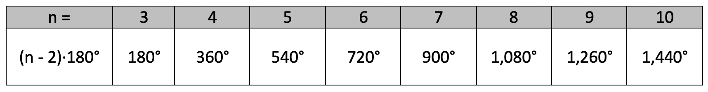
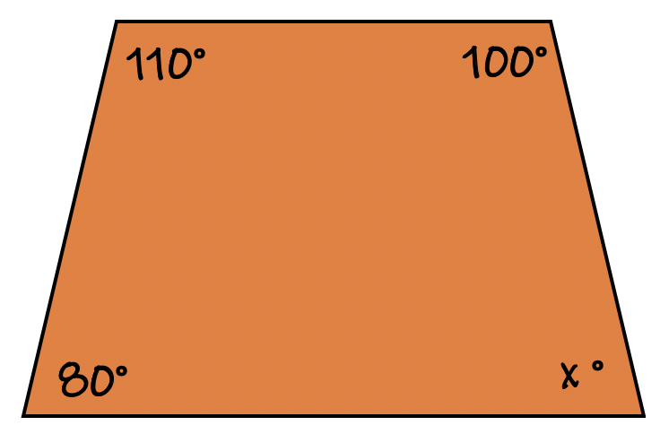
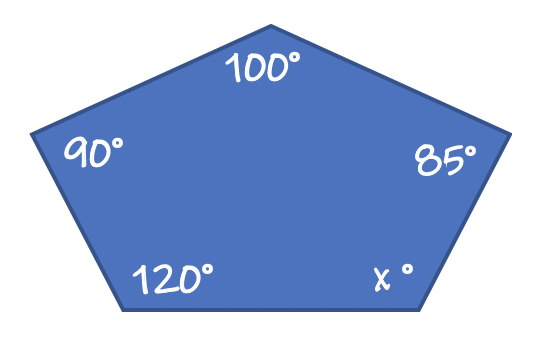
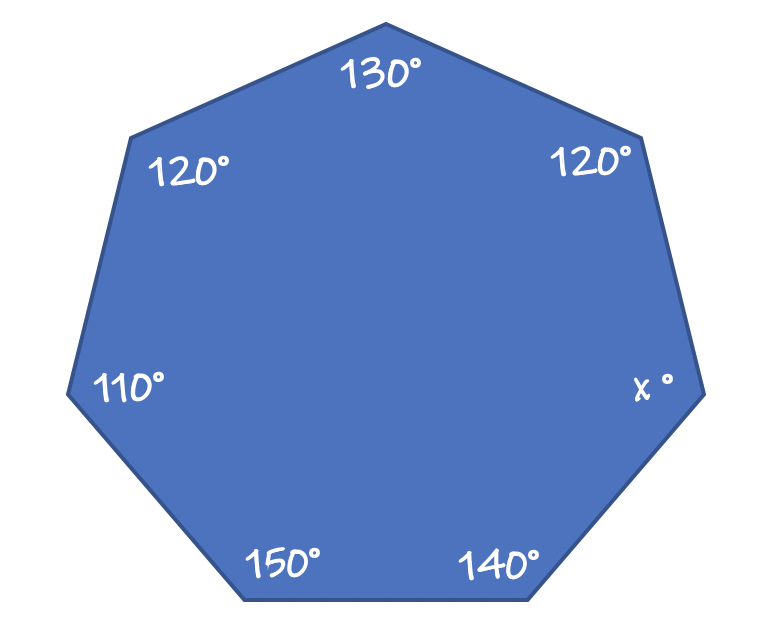
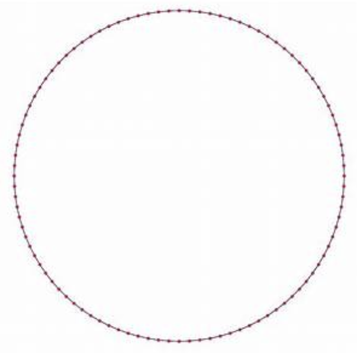

The sum of the interior angles of any polygon can be calculated using the formula:
(n - 2)180° where variable n = the number of sides the polygon has.
For example, we already covered the interior angle sum of any triangle = 180°. A triangle has three sides. Therefore n = 3.
Using the formula to calculate the interior angle sum would be calculated as follows:
(n - 2)180°.
(3 - 2)180°
1 x 180° = 180°, as expected.
The polgons in Geometry are as follows:
3 sides: triangle
4 sides: quadrilateral
5 sides: pentagon
6 sides: hexagon
7 sides: heptagon
8 sides: octagon
9 sides: nonagon
10 sides: decagon
The sum of the interior angles of each polygon are shown in the table below:

Notice the sum increases by 180° for each polygon. The table could extend to a polygon of any type. We can even calculate the sum inside a 50-sided polygon, but for that we would want to utilize our formula to save time.
To solve for a missing angle's degree inside a polygon works just like the triangle sum. Add all the angles that you have, then subtract this number from the total interior angle sum. This will give you the missing angle's degree. Use the table to determine the total sum as its different for each shape.
Example1:

Step 1 = this is a 4-sided polgon. Therefore, n = 4.
A Quadrilateral's interior angles add to equal 360°.
Step 2 = Subtract all three angles from 360° and you will have the answer, the missing angle's degrees.
Calculation: 360° - 110° - 100° - 80° = ?
Answer: 70° ★
Example 2: Solve for the missing angle.

Step 1 = this is a 5-sided polgon. Therefore, n = 5.
A Pentagon's interior angles add to equal 540°.
Step 2 = Subtract all four angles from 540° and you will have the answer, the missing angle's degrees.
Calculation: 540° - 120° - 90° - 100° - 85° = ?
Answer: 145° ★
Example 3: Solve for the missing angle.

Step 1 = this is a 7-sided polgon. Therefore, n = 7.
A Heptagon's interior angles add to equal 900°.
Step 2 = Subtract all six angles from 900° and you will have the answer, the missing angle's degrees.
Calculation: 900° - 140° - 150° - 110° - 120° - 130° - 120° = ?
Answer: 130° ★
Example 4: Using the formula (n - 2)180°, calculate the interior angle sum of a 50-sided polygon.
Solution: a 50-sided polygon means n = 50. Substitute 50 into the equation and simplify.
(50 - 2)180°
(48)180°
Answer: 8,640° ★
Example 5: Using the formula (n - 2)180°, calculate the interior angle sum of a 1,000-sided polygon.
Solution: a 1,000-sided polygon means n = 1,000. Substitute 1,000 into the equation and simplify.
(1,000 - 2)180°
(998)180°
Answer: 179,640° ★
A 1000-gon almost looks like a circle. The more sides a polygon has the closer it approaches a circular shape.
